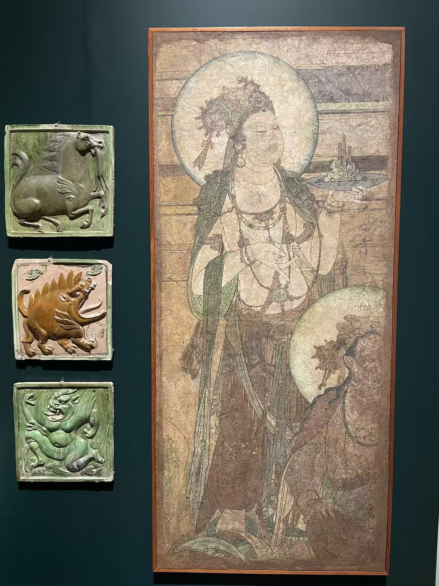

五代 / 寺院壁画
胁侍菩萨壁画
看画
点击照片可放大；有多张照片时，可以切换查看。


作品札记
这片画很窄，却容下了前后两个人物。站立的菩萨端着浅盘，盘上是枝状的供物；前景还能辨认出另一位坐姿菩萨。人物一高一低，视线与动作都指向残片之外，留下了原来中心主尊的位置感。
普林斯顿把盘中供物解释为宝山或珊瑚，并推测这两位菩萨原是中央佛教尊像的胁侍。馆方还提到，原构图另一侧的一片相关壁画现藏史密森尼国家亚洲艺术博物馆。眼前这件因此更适合按“群像的一侧”来读。
现场展签详细说明了墙面的层次：含草的粗泥层上，覆以混有植物纤维的细泥，再加平滑的石灰面，最后墨线勾形、施加颜色。它也指出残片损伤较多，经历过现代修复。1952年，普林斯顿从卢芹斋处购入此画。
资料：普林斯顿：胁侍菩萨壁画
馆方以“被认为来自”河南温县慈胜寺表述来源，作品本身无署名、无纪年。照片左侧的三件小型展品另属其他藏品。